FASTEST MEASURED (TIE)
btrfs raid5 ≈ mdadm raid5
9.034 / 9.035 GB/s seqRD · 14.43 / 14.41 TiB
Cold FS controls · stage5 · STO-01_seq_read_1M_j4 · Pareto frontier on capacity × cold read
Tiered local-AI NAS · Minisforum N5 MAX · final campaign 2026-10
Five NM790 NVMe drives (four on Gen4 ×1, one on ×4), 128 GB unified memory and five unbenchmarked 3.5″ SATA bays. btrfs raid5 and mdadm raid5 read fastest when healthy. RAIDZ1 is the default: it keeps 93.51 % of its reads with a drive out, against 5.87 % for btrfs raid5, and it rebuilds in 29 minutes. Once a model is resident, inference speed is the same on every pool.
FASTEST MEASURED (TIE)
9.034 / 9.035 GB/s seqRD · 14.43 / 14.41 TiB
Cold FS controls · stage5 · STO-01_seq_read_1M_j4 · Pareto frontier on capacity × cold read
RECOMMENDED DEFAULT
14.11 TiB · 7.83 GB/s seqRD · 93.51 % degraded
Cold ZFS stage1 + stage7 STO-09 · rebuild 1,740 s @ 1.1656 GB/s
Compare · final sealed Protocol B
Cold regime (primarycache=none or dropped caches) is the layout story. Non-steady cases are hatched; PROVISIONAL cases carry ⚠. ZFS random/sync IO ran on zvols and btrfs/mdadm on files, so compare random IO within a stack only.
Driven offline from data/sealed-metrics.json. Scores are normalized A↔B under your weights — not a sealed verdict. Default filter = cold only.
—
0.0
—
0.0
Recommended pick
—
Set weights and pick two layouts.
Paired bars · A (top) / B (bottom) · normalized
The 1.14 GB/s pin was SN1 link-trained at Gen1 ×1. Gen4 reruns read 9.035 GB/s, tying btrfs raid5.
stage5 mdadm-ext4-raid5 cold · STO-01_seq_read_1M_j4The fs controls put btrfs raid5 at 4.066 vs RAIDZ1 0.718 GB/s, but only ZFS was preconditioned. Matched STO-09 S1: RAIDZ1 4.499, btrfs 2.78.
stage7 S1 · STO-01_seq_write_1M_j4×4 vs ×1: seq read 3.27×, 4K random read 1.18×, sync 1.09×. Flush-bound, not link-bound.
stage1-single-x1 vs stage2-single-x4Warm FS reads land at 35.685–36.74 GB/s on every layout. Never sell warm numbers as the array.
stage5 warm · STO-01_seq_read_1M_j4mdadm raid5 has the fastest seq write (5.04 GB/s) and only 2,489 IOPS on 16K random write (btrfs raid5: 22,981).
stage5 mdadm-ext4-raid5 · STO-02_rand_write_16k_j4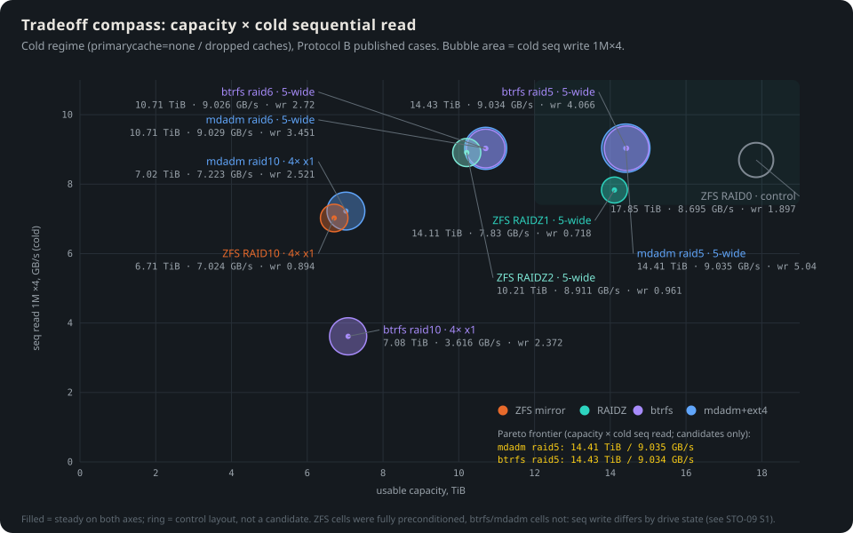
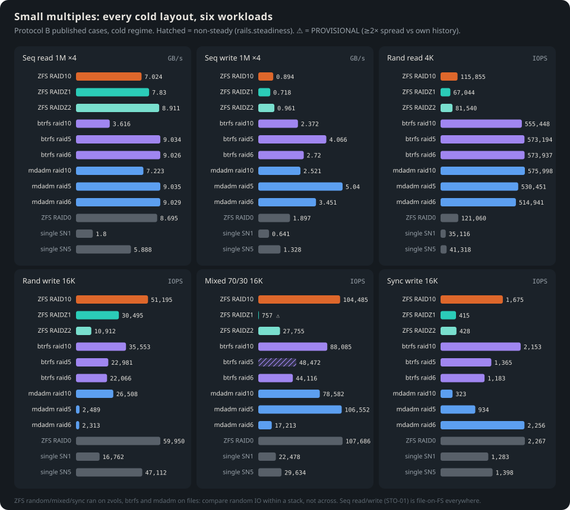
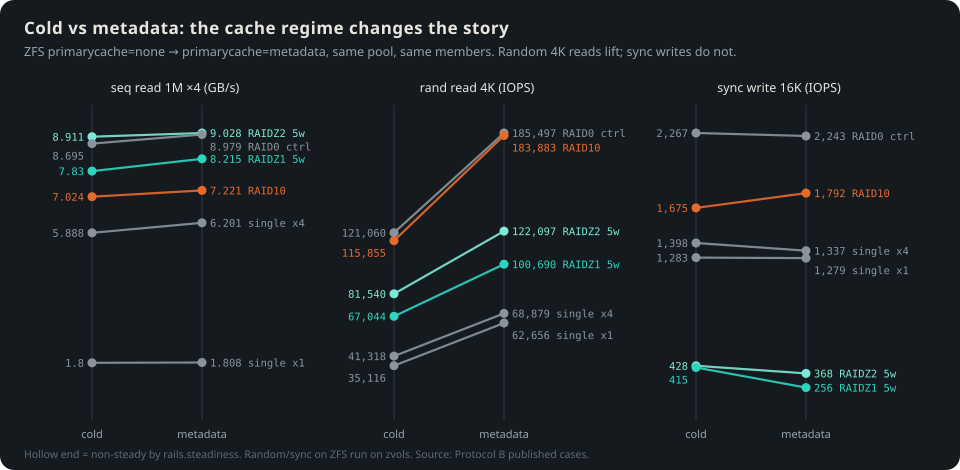
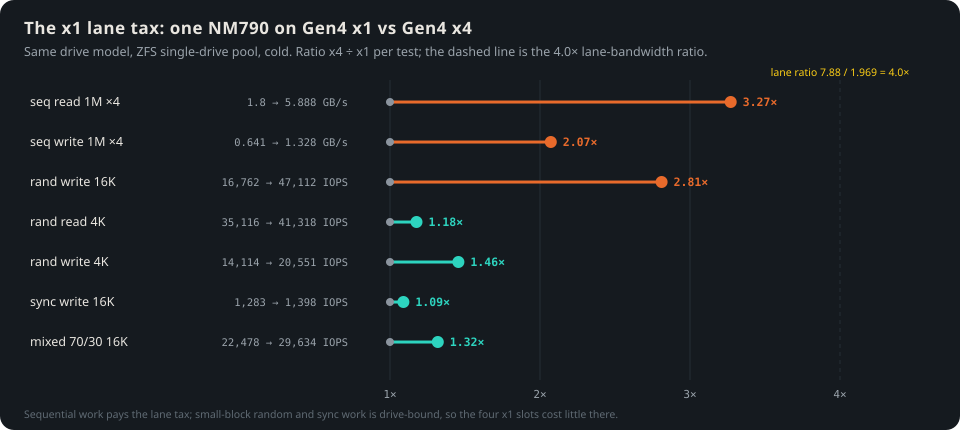
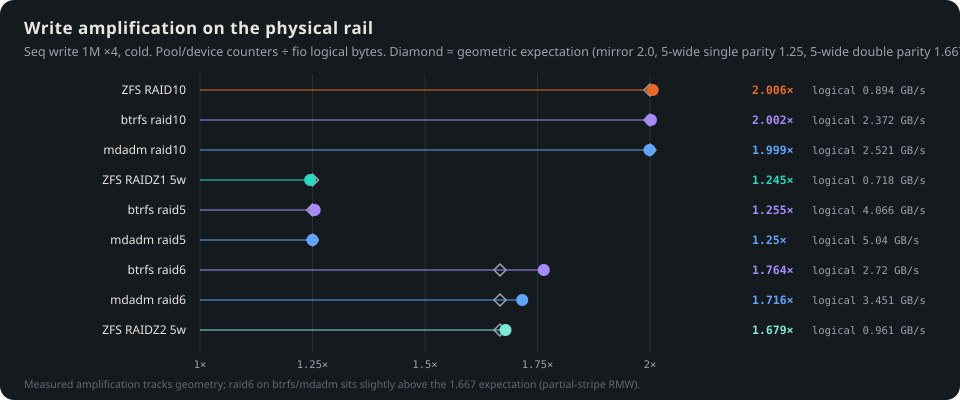
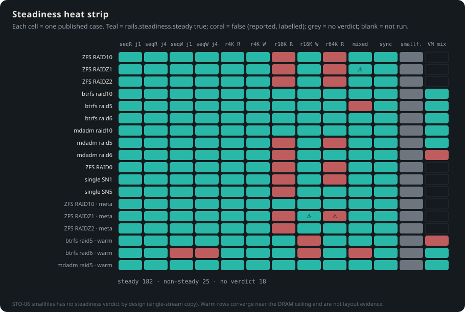
Stage 7 · fail one drive
Each arm was filled to 50 % with incompressible data, then one member was failed and replaced. ZFS reconstructs from parity at near-full speed and resilvers only allocated blocks. btrfs raid5/6 reads collapse to about 0.53 GB/s, whichever member fails. The S4 write shortfall is partly drive write state: a no-failure control returned 66.58 % and 67.71 % of S1 (n=2).
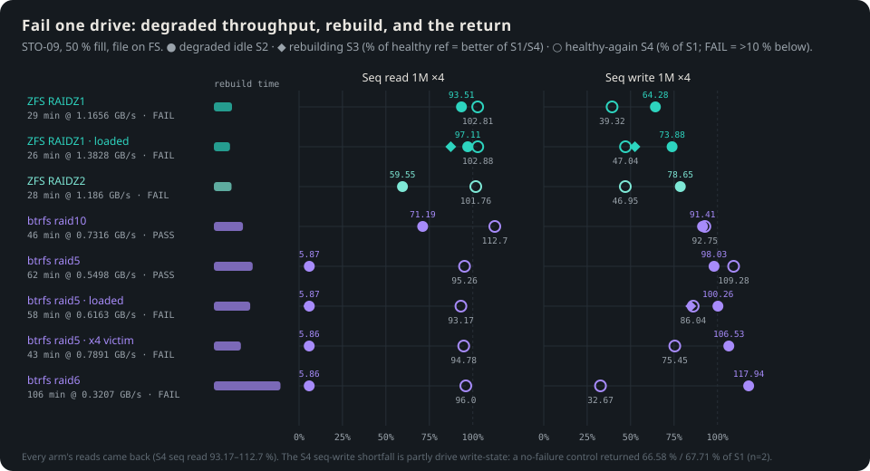
| arm | rebuild | GB/s | S2 seqRD % | S4 seqWR % | verdict |
|---|---|---|---|---|---|
| ZFS RAIDZ1 | 1,740 s | 1.1656 | 93.51 | 39.32 | FAIL (write return) |
| ZFS RAIDZ1 · loaded | 1,550 s | 1.3828 | 97.11 | 47.04 | FAIL (write return) |
| ZFS RAIDZ2 | 1,690 s | 1.186 | 59.55 | 46.95 | FAIL (write return) |
| btrfs raid10 | 2,790 s | 0.7316 | 71.19 | 92.75 | PASS |
| btrfs raid5 | 3,720 s | 0.5498 | 5.87 | 109.28 | PASS |
| btrfs raid5 · loaded | 3,480 s | 0.6163 | 5.87 | 86.04 | FAIL (write return) |
| btrfs raid5 · x4 victim | 2,590 s | 0.7891 | 5.86 | 75.45 | FAIL (write return) |
| btrfs raid6 | 6,380 s | 0.3207 | 5.86 | 32.67 | FAIL (write return) |
FAIL = S4 sequential write returned more than 10 % below S1 (the harness rule). Every arm’s reads came back (93.17–112.7 %).
Recipes · real-world N5 NAS
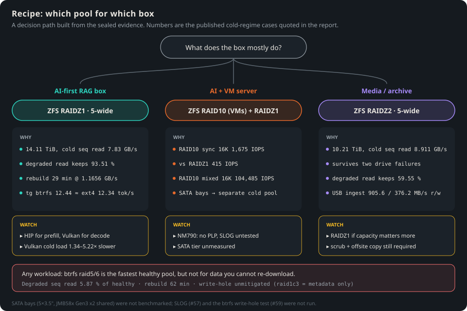
ZFS RAIDZ1 5-wide · 14.11 TiB
Inference does not care about the pool once a model is resident (Gemma 4 26B tg128: 50.146 on btrfs vs 50.08 tok/s on ZFS). So the pool is chosen on storage merits: capacity, cold reads (7.83 GB/s) and degraded behaviour (93.51 %). Use HIP for prefill and embeddings, Vulkan for interactive decode (+6–11 % tg), and expect Vulkan cold loads to take 1.34–5.22× as long.
ZFS RAID10 for VM disks · RAIDZ1 for models & data
VM and database disks want sync and mixed IO, where ZFS RAID10 leads (sync 16K 1,675 vs 415 IOPS on RAIDZ1; mixed 104,485 IOPS). Put the 5×3.5″ SATA bays in a separate cold pool for backups and archives.
No PLP: the NM790 has no power-loss protection. Do not set sync=disabled. A SLOG on the ×4 slot was not tested.
By OS / NAS stack
RAIDZ1 (or RAID10 + RAIDZ1 split)
ZFS-native. VM disks as zvols. Run llama.cpp on the host or in an LXC with the iGPU. Check negotiated PCIe link speeds after every boot: SN1 downtrained to Gen1 twice during the campaign.
RAIDZ1 or RAIDZ2
A ZFS appliance. RAIDZ2 for archives (two failures, 59.55 % degraded reads), RAIDZ1 for capacity. ROCm on TrueNAS was not tested.
OpenZFS RAIDZ1 · btrfs raid1/10 only
btrfs raid5 is fast when healthy (9.034 GB/s), but degraded reads drop to 5.87 % and the data write hole is unmitigated upstream (-m raid1c3 protects metadata only). If you want btrfs, use raid1/raid10 profiles. mdadm raid5 suits bulk sequential work only.
AI · stage 3 final
llama.cpp llama-bench (HIP and Vulkan), models loaded from a cold btrfs raid5 pool with paired ZFS RAIDZ1 cells. Across all 16 comparisons we land at 0.7128–0.9715× of the Minisforum-published floor; the vendor states no conditions beyond ngl 99 and FA on.
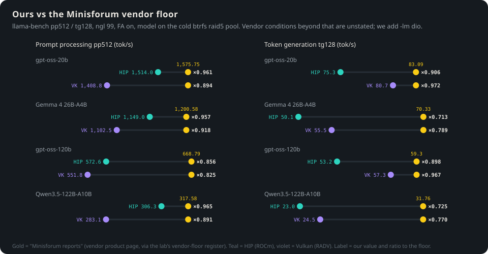
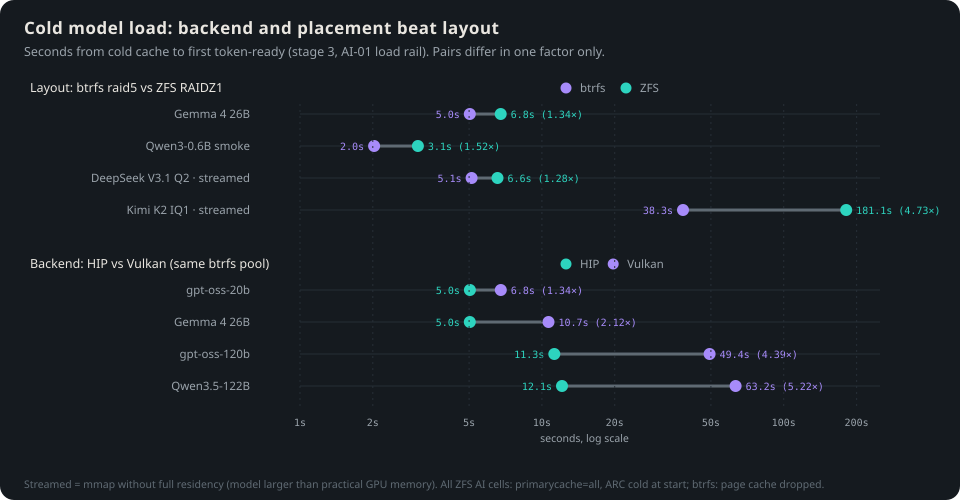
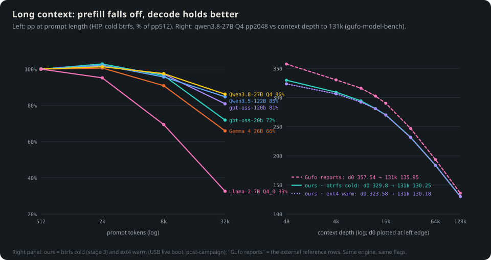
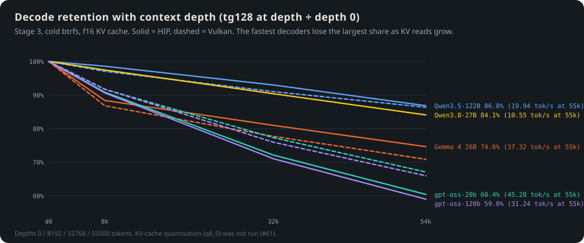
| model (HIP · btrfs cold) | pp512 | tg128 | vs floor pp / tg | cold load |
|---|---|---|---|---|
| gpt-oss-20b MXFP4 | 1,488.02 | 75.49 | 0.9608 / 0.9064 | 5.04 s |
| Gemma 4 26B-A4B Q4_K_M | 1,130.87 | 50.15 | 0.957 / 0.7128 | 5.035 s |
| gpt-oss-120b MXFP4 | 564.01 | 53.12 | 0.8562 / 0.8976 | 11.256 s |
| Qwen3.5-122B-A10B Q4_K_M | 308.21 | 22.97 | 0.9646 / 0.7252 | 12.111 s |
| Qwen3.8-27B Q4_K_XL (dense) | 332.94 | 12.59 | — | 4.635 s |
| Llama-2-7B Q4_0 | 1,366.27 | 54.16 | — | 2.025 s |
| DeepSeek V4 Flash IQ2_XXS | 27.35 | 15.26 | — | 13.65 s |
| Kimi K2 IQ1 · streamed (btrfs / ZFS) | 3.57 / 4.69 | 1.09 / 1.55 | — | 38.334 / 181.147 s |
External references are quoted as “X reports Y” in the final report’s competitive section (ITPro, ServeTheHome, Level1Techs, Gufo, kyuz0, Lin/llm-tracker, MLPerf v6.1). KV-cache quantisation was not run.
Methodology · N5 Lab
Matrix live status → matrix/ · Issues live on the private lab tracker.
N5 Lab analysis · final
Before stage 7, “RAIDZ1 by default” rested on capacity, ecosystem and caution. Now it rests on measurement. With a drive out, RAIDZ1 reads 93.51 % of healthy while btrfs raid5 reads 5.87 %, and RAIDZ1 resilvers at 1.1656 GB/s against 0.5498. stage7 STO-09 · zfs-raidz1 vs btrfs-raid5
The fs controls showed btrfs raid5 writing 5.66× faster than RAIDZ1, but the ZFS cells had fully preconditioned their NM790s and the btrfs cells had not. Under one matched STO-09 protocol, RAIDZ1 wrote 4.499 GB/s and btrfs raid5 2.78. On DRAM-less, no-PLP drives, write numbers mean little without the drive state. stage5 vs stage7 S1 · STO-01_seq_write_1M_j4
With the SN1 link fault removed, mdadm raid5 reads 9.035 GB/s, level with btrfs raid5 at 9.034. It also writes sequentially fastest (5.04 GB/s), but its 16K random writes collapse to 2,489 IOPS. stage5 mdadm-ext4-raid5 reruns
Resident decode is identical across pools. Cold load differs modestly for resident models (5.035 vs 6.758 s for Gemma) and sharply for streamed ones (Kimi K2 38.334 vs 181.147 s). The backend matters more than the layout: Vulkan loads gpt-oss-120b in 49.375 s against 11.256 s for HIP. stage3 AI-01 load rail
Non-obvious joins
Not yet measured
Each item is tracked as a follow-up on the private lab tracker. None of the figures above stands in for these.
| item | status |
|---|---|
| btrfs raid5/6 write-hole trip test (unclean shutdown) | NOT YET MEASURED harness built, stage 8 deferred |
| ZFS RAIDZ1 + SLOG on the Gen4 ×4 slot (sync A/B) | NOT YET MEASURED |
| 5×3.5″ SATA bay tier (JMB58x, shared Gen3 ×2) | NOT YET MEASURED |
| 2×10GbE end-to-end client throughput (SMB / NFS) | NOT YET MEASURED |
| KV-cache quantisation (q8_0) A/B | NOT YET MEASURED every cell f16 KV |
| Prefill beyond 32k in the stage-3 bench | PARTIAL gufo-model-bench rows reach 131k for one model |
| Prefill-under-decode scheduling probe | NOT YET MEASURED |
| In-campaign USB ingest (STO-13) | LOST post-campaign STO-13b: 905.6 / 376.2 MB/s r/w |
| File-based ZFS random IO (removes the zvol-vs-file confound) | NOT YET MEASURED |
| Drive-state-matched seq write across ZFS / btrfs / mdadm | NOT YET MEASURED |
| Attended rebuild arm with per-member io_ticks | NOT YET MEASURED |
| RAIDZ1 cold mixed 70/30 (PROVISIONAL, 19× spread) | RE-MEASURE |
| Streamed-model load on ZFS with primarycache=metadata | NOT YET MEASURED |
| Why btrfs raid10 cold reads are low | OPEN |
| Per-member NM790 endurance (TBW) over the campaign | NOT YET SEALED |
Follow
The full write-up, with evidence tables for every figure, is the final report (also as a PDF). The matrix keeps the cell history.